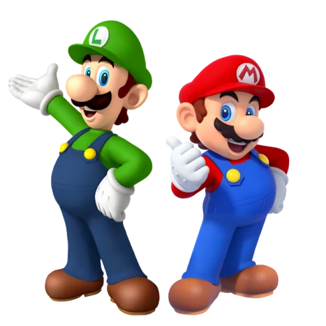
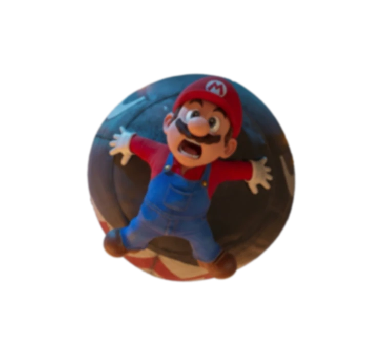
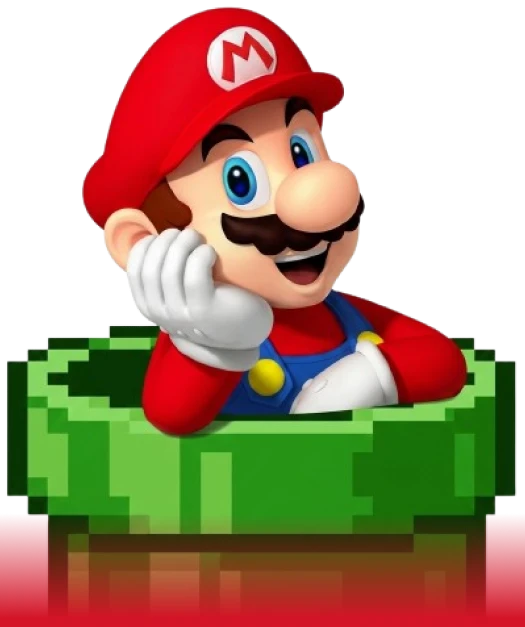

SUPER MARIO BROS - LA AVENTURA
QUE NUNCA PASA DE NIVEL
APRENDE A ENFRENTAR TUS PROPIOS OBSTÁCULOS, RECUPERAR TU
ENERGÍA Y CONQUISTAR TU SIGUIENTE NIVEL
PERSONAL.

TRANSFORMA TU VIDA EN 3 NIVELES
RECONOCE TU PROPIO
"REINO EN CAOS"
ENFRENTA TUS PROPIOS
"BOWSER"
CONQUISTA TU SIGUIENTE
NIVEL


MÁS QUE UN JUEGO. UNA FILOSOFÍA
DE SUPERACIÓN
DESDE SU DEBUT EN SUPER MARIO BROS., EL UNIVERSO DE MARIO Y
LUIGI NO SOLO REDEFINIÓ LA INDUSTRIA
DEL ENTRETENIMIENTO;
TAMBIÉN NOS ENSEÑÓ ALGO ESENCIAL: CADA OBSTÁCULO PUEDE
SUPERARSE CON
CONSTANCIA, ESTRATEGIA Y VALENTÍA.
EN EL REINO CHAMPIÑÓN NO EXISTEN ATAJOS MÁGICOS.
EXISTEN INTENTOS. CAÍDAS. APRENDIZAJE. Y UN NUEVO SALTO.
ESA ES LA ESENCIA DE MARIO BROS: AVANZAR, INCLUSO CUANDO EL NIVEL
SE VUELVE MÁS COMPLEJO.